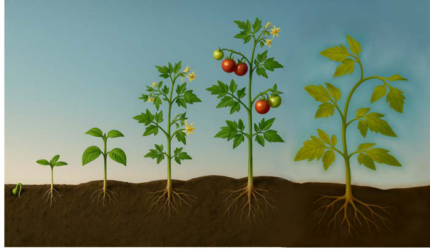

la mwili na tabia. Mfano wa mabadiliko kwa wanyama ni buu kubadilika na kuwa kipepeo na mtoto kukua na kuwa mtu mzima. Mabadiliko katika mimea na wanyama yanahusisha mabadiliko ya kimwili na kitabia ambayo ni muhimu kwa maisha ya mmea au mnyama.
Ukuaji katika mimea
Hatua za ukuaji wa mmea ni mfululizo wa mabadiliko yanayotokea katika vipindi mbalimbali vya maisha ya mmea kuanzia kuota kwa mbegu hadi kufa kwake. Kila hatua ina mabadiliko yanayosaidia mmea kukua na kuendelea na mzunguko wa maisha yake. Hatua hizo ni kuota kwa mbegu, hatua ya mche, ukuaji wa majani, hatua ya uzazi na hatua ya uzee. Tazama au sikiliza maelezo ya kielelezo namba 1.

Kielelezo kinaonyesha hatua za ukuaji wa mmea wa nyanya kutoka mbegu inayoota, mche, mmea wenye maua, mmea wenye matunda, hadi mmea uliofikia hatua ya uzee.
Hatua ya kuota kwa mbegu
Mbegu iliyokomaa huanza kuota pale inapopata mahitaji muhimu ya uotaji ambayo ni mwanga wa jua, maji, hewa, virutubisho na jotoridi linalostahili. Katika hatua hii, mizizi huanza kutoka katika kitungamizizi kilichopo kwenye mbegu na kukua kuelekea kwenye udongo. Mizizi hufyonza maji na virutubisho kutoka katika udongo ili kusaidia uotaji. Pia, shina chipukizi huanza kuota kutoka katika kiinishina kilichopo kwenye mbegu na kukua kuelekea juu ya udongo ili kuanza kutengeneza shina na majani. Katika hatua hii chakula kilichohifadhiwa katika mbegu hutumika ili kuipa mbegu nguvu ya kuota.
Hatua ya mche
Baada ya kuota kwa mbegu, hatua ya mche hufuata. Katika hatua hii, mche huanza kukua kwa haraka. Idadi ya majani huongezeka, mizizi